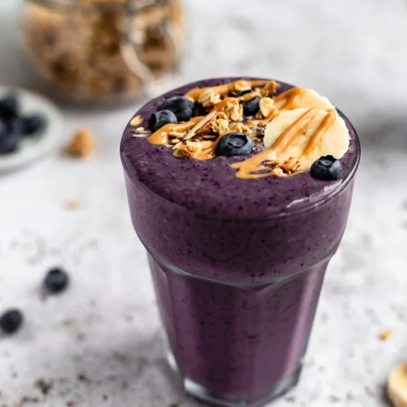

Home
Peanut Butter Blueberry Banana Smoothie

Description
This creamy 4-ingredient peanut butter blueberry banana smoothie makes the perfect healthy breakfast or snack. Top this easy blueberry banana smoothie with your favorite granola, extra banana slices and blueberries, and a drizzle of peanut butter! Options to add extra protein or sneak in veggies, too.
- 1 ripe medium banana( frozen )
- 1 cup frozen blueberries
- 1 tbsp peanut or almond butter
- 1 cup unsweetened almond milk, plus more to thin if nesessary
Steps
- Add all ingredients to a blender and blend until smooth. Top with granola, a drizzle of peanut butter and extra frozen or fresh blueberries and banana slices. Serves 1. Double the recipe to serve 2.